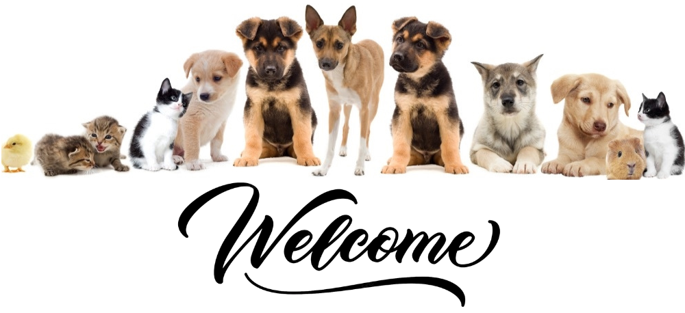
We are specialists in the care and permanent comprehensive care of your pet's health, with more than 20 years of experience, and a staff passionate about what they do. We are at your disposal and that of your pet through reliable and cutting-edge services with 100% recommended product offers for better care of our daily companions, with efficient and effective communication in each of the processes that require our support. .
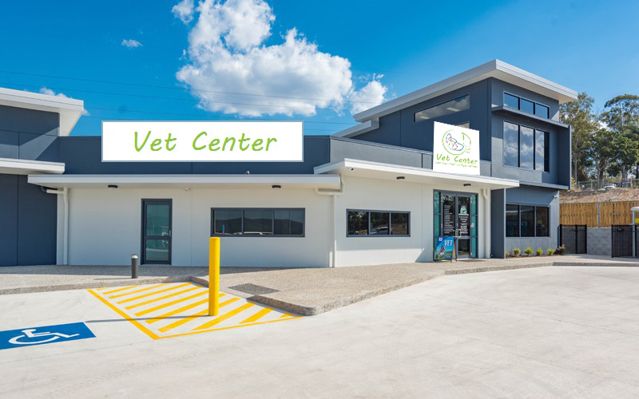
- 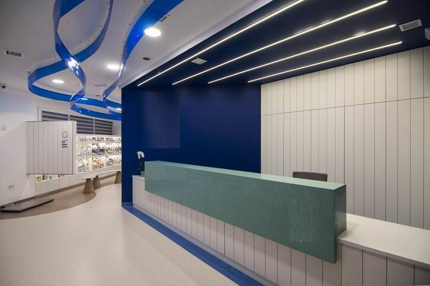
- 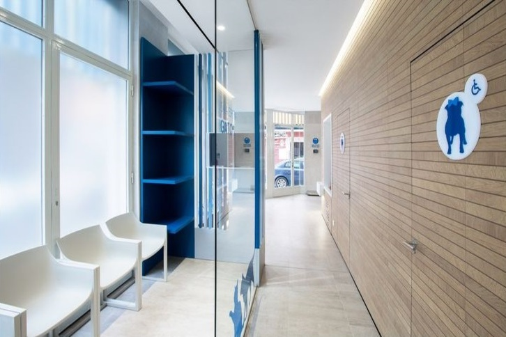
- 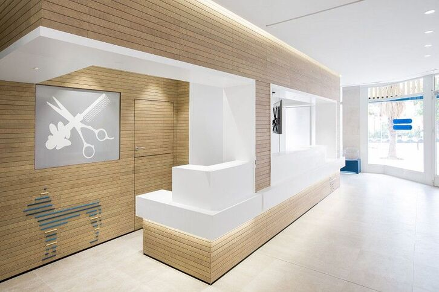
- 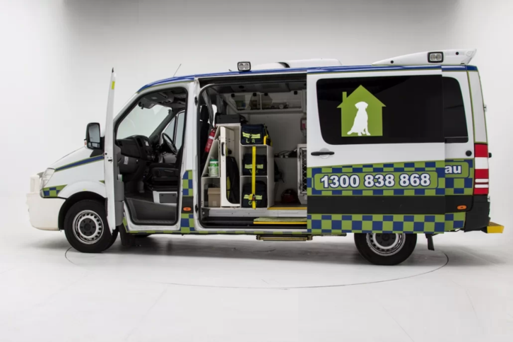
- 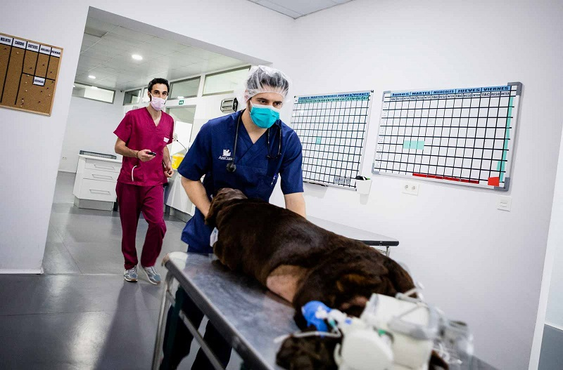
- 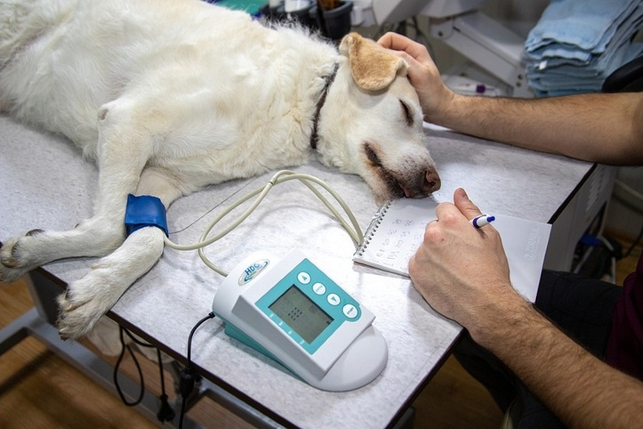
- 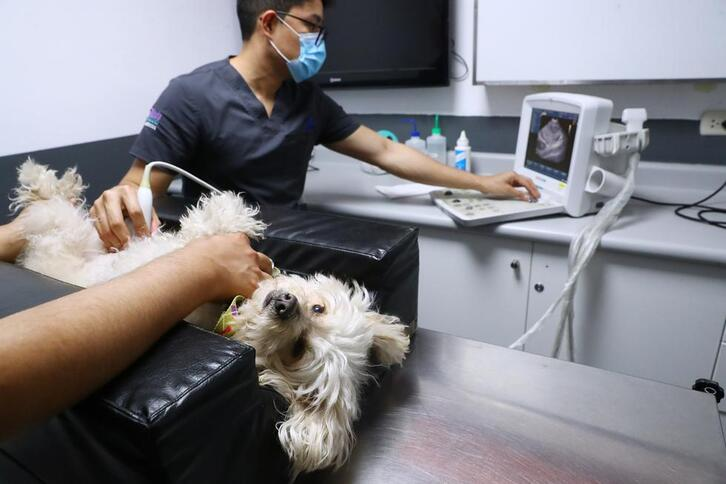

- 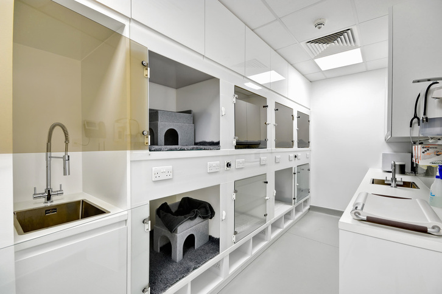
- 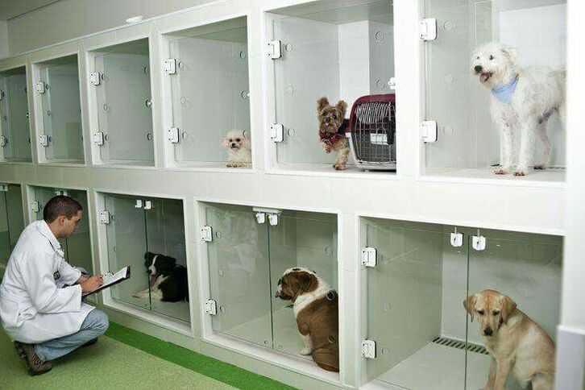
WHY DO YOU PREFER US?
100% qualified staff:
We make significant investments in training and training in order to specialize and enhance the skills of our team. From the simplest to the most complex tasks, the more knowledge our staff has about caring for your pet, the better results for everyone. We firmly believe that more investment in training means more and better results for your family, your pet and us.
Passion for precision:
Being passionate about the things we do is part of our essence. This is one of the reasons why we take care to do everything possible to care for your pet with precision.
We also include an important range of services that ensure our peace of mind day by day.
Emergency service 24 hours every day of the week at no additional cost
Home Nursing Assistant
Hospital, surgical and palliative care service
We control the symptoms with the safe administration of medications, (according to the prescription of your treating veterinarian) with accuracy.
Health professionals with vocation and human quality
Your Pet, Our Passion
There are certain things to take into account when choosing your pet's food, each food provides different nutrients, so make sure you give your dog or cat what they need for each stage of his life.
For them to continue strengthening day by day, Vet Center offers you a 40% off on dog or cat food.
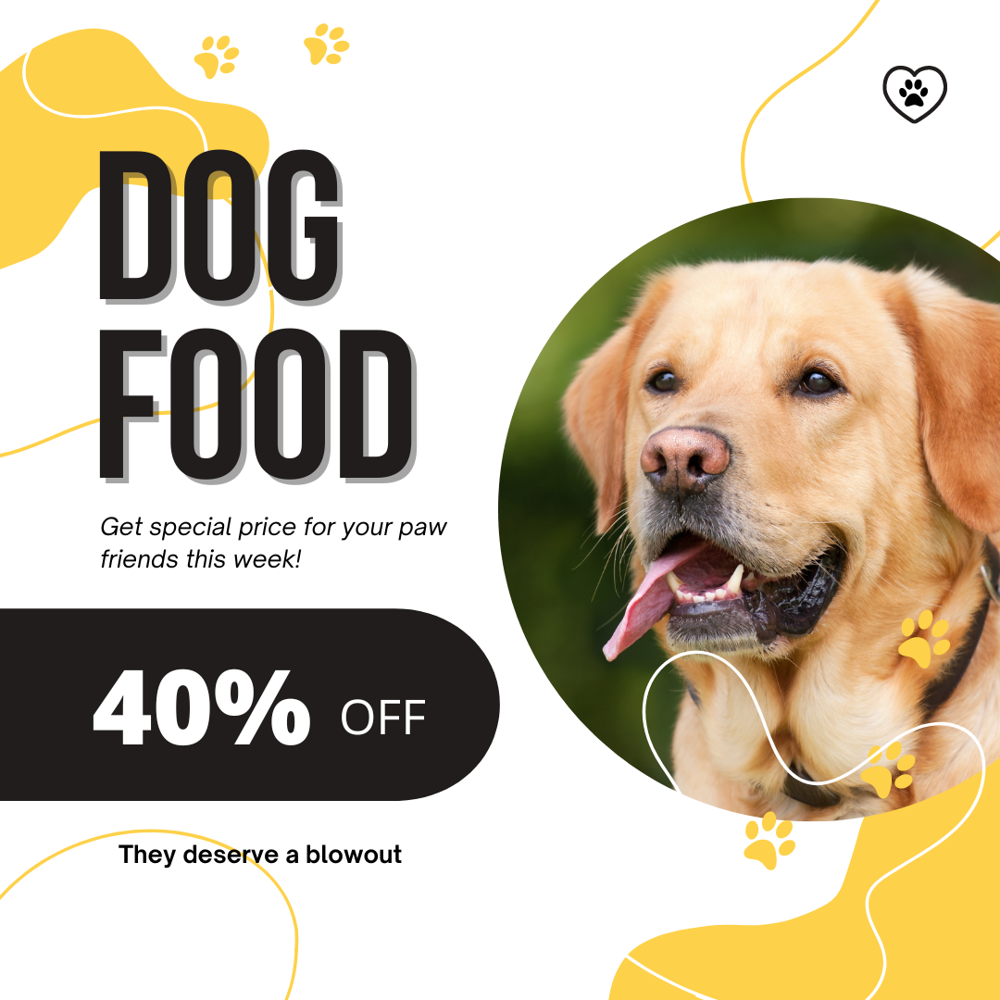
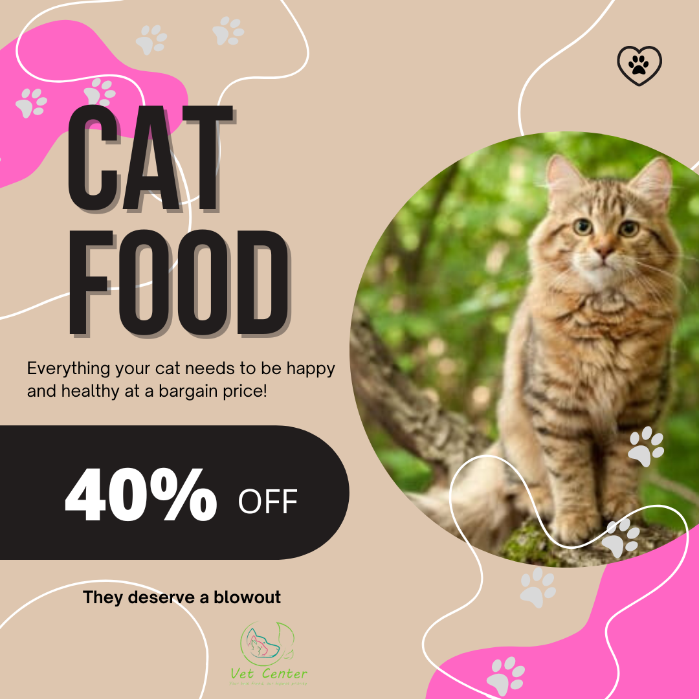
READ MORE >>
Care tips for different types of pets
When you open your home to a new friend, be it a dog or cat or any other animal, you make a commitment to it. Your new pet is now a member of your family, therefore, it deserves special care and protection for its well-being. Being a responsible owner means assuming a series of obligations to ensure your health, food, home and physical and emotional integrity.
Every animal on the planet has the right to receive dignified and respectful treatment like any other living being. Giving respect to each species fosters in society a culture free of violence and animal abuse. When taking care of our pets, love and affection for these four-legged beings that accompany us in daily life is manifested.
Below we leave you important tips for the care of different species of animals, if you have any questions, do not hesitate to contact us or visit us.
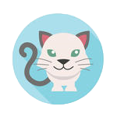
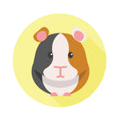
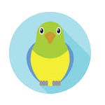